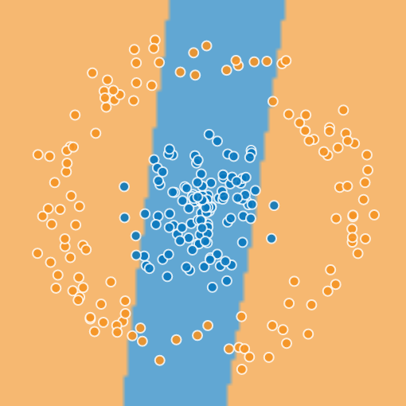
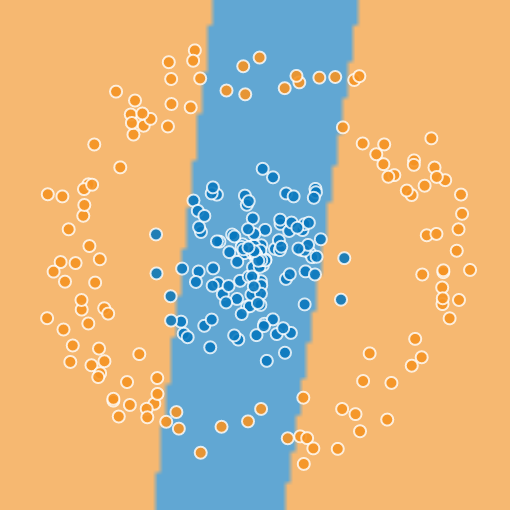
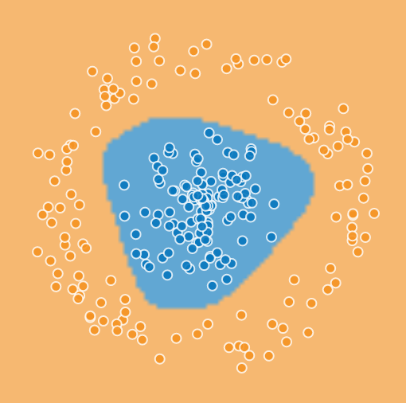
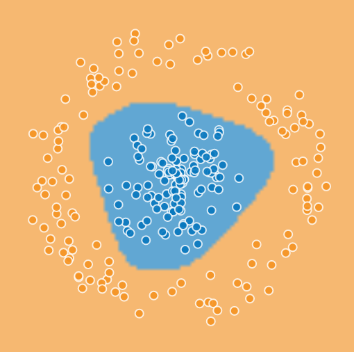

Machine Learning with JavaScript in the Browser
Focus on Deep Learning
Oliver Zeigermann / @DJCordhose

Personal Motivation
- Studied AI in the 90s
- Nothing worked
- Especially neural networks did not cut it at all
- Main problems
- not enough data
- not enough machine power
- Met Big Data in 2014
- @Graylog2
- Thought about ways to extract insights from big data sets
Why JavaScript for Machine Learning?
- Python and R are predominant
- Have a large and mature set of libs
- Are reasonably fast
- Using binding to C/C++ or Fortran
- JavaScript has benefits, though
- might be the language you are most comfortable with
- might be the only language around (because all you have is a browser)
- zero installation, easy to get started
Why Deep Learning?
Parts that can learn from data
By AI strategy (gray)

http://rinuboney.github.io/2015/10/18/theoretical-motivations-deep-learning.html
The perceptron - where it all begins

http://www.theprojectspot.com/tutorial-post/introduction-to-artificial-neural-networks-part-1/7
The perceptron - cont'd
- mathematical model of a biological neuron
- creates an output based on weighted inputs
- can use a step function to create boolean output
- alternatively a sigmoid function to create a similar characteristic, but still giving continuous values
- can be trained to create an output based on an input
- training means to adjust weights of inputs
- preceptron training visualization
What can a perceptron do?
- output separates plane into two regions using a line
- such regions are called linearly separable
- can emulate most logic functions (NOT, AND, OR, XOR, NAND)
- however, XOR is not linearly separable
- can only be emulated with more than one perceptron
- each additional perceptron adds a separation line
- output perceptron can combine results
- XOR doable with two perceptrons plus one for output
Linear separability

http://www.theprojectspot.com/tutorial-post/introduction-to-artificial-neural-networks-part-1/7
Feedforward Neural Networks - putting perceptrons together

Feedforward Neural Networks - cont'd
- perceptrons are organized in layers
- first layers takes inputs
- last layer produces output
- middle layer(s) called hidden layer(s)
- each perceptron in each layer gets exactly the same input
- no connection between perceptrons in same layer
- each perceptron in one layer feeds all perceptrons in the next layer with its complete output
- data flows forward in one direction, there are no cycles
Backpropagation
- Errors in output can be used for training
- Go through the network in reverse order
- Starting from output layer to stopping at input layer
- Error will correct weights of perceptrons
- The more a perceptron has contributed to an error, the bigger the correction
Deep Neural Networks
- Deep Neural Networks have more than one hidden layer
- they can approximate any known function
- probably best predictive power among all strategies
- Convolutional Deep Neural Networks are a variant specialized in computer vision
JavaScript Libraries for Deep Neural Networks
-
Brain.js
- Unmaintained :(
- Still interesting to get ideas from
- Synaptic.js
- small general lib for Neural Network
- nice and simple API
- ConvNetJS
- mainly Deep Neural Network
- comes with visualizations, great for education
- our choice for the rest of this talk
ConvNetJS: Example
Iteractive classifyer using deep neural network


http://cs.stanford.edu/people/karpathy/convnetjs/demo/classify2d.html
Code for classifyer
layer_defs = [
{type:'input', out_sx:1, out_sy:1, out_depth:2},
{type:'fc', num_neurons:6, activation: 'tanh'},
{type:'fc', num_neurons:2, activation: 'tanh'},
{type:'softmax', num_classes:2}];
net = new convnetjs.Net();
net.makeLayers(layer_defs);
trainer = new convnetjs.SGDTrainer(net,
{ learning_rate:0.01,
momentum:0.1,
batch_size:10,
l2_decay:0.001});
Classifyer Example - Layers
- input layer: 2 outputs TODO: but what? (out_sx:1, out_sy:1 only non null when processing image data)
- 2 hidden layers
- activation function tanh (sigmoid/logistic function also supported)
- first has 6 neurons, second 2
- type fc: fully connected, like feedforward NNs
- output layer uses softmax: emits probabilities for the two classes
Classifyer Example - Training
- Training uses backpropagation (as described before)
- SGDTrainer: TODO
- learning_rate: TODO
- momentum: TODO
- batch_size: TODO
- l2_decay: TODO
ConvNetJS: Separability
Just one hidden layer, number of perceptions changing
1, 2, 3, 5, 10
 

 
